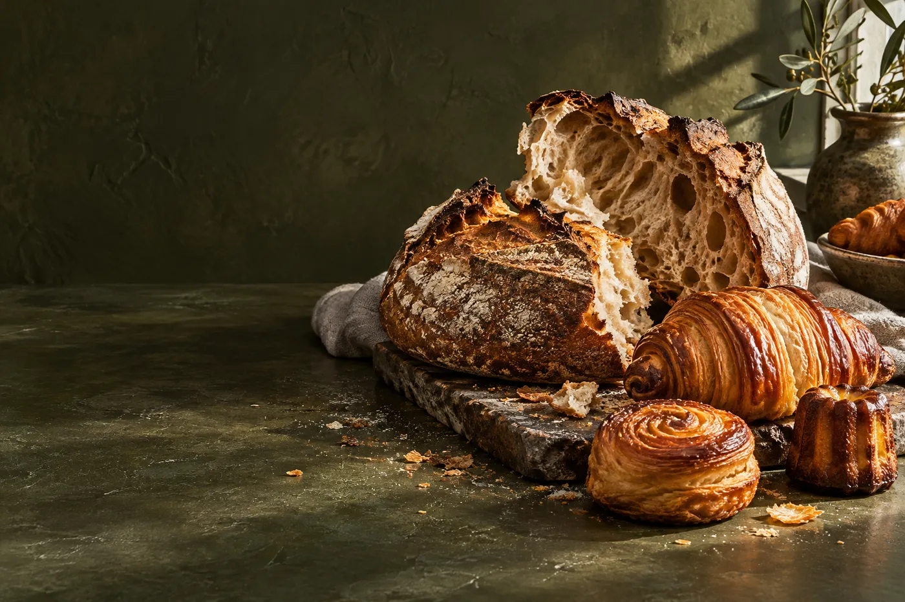
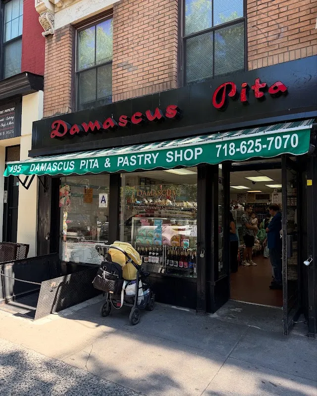
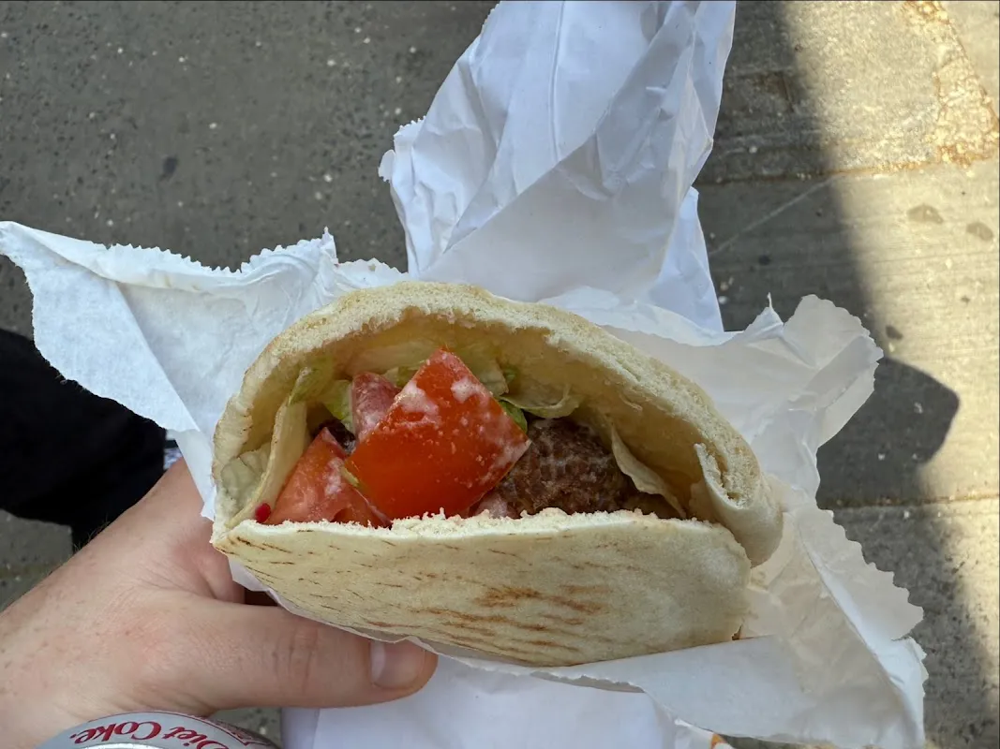

Damascus.
The bread counter.
Bread and pastry on Atlantic Avenue in Brooklyn. Explore a sample counter, then ask the shop about today’s selection.
Explore the counter →195 Atlantic Ave, Brooklyn, NY 11201

What brings you in?
Begin with the kind of bakery visit you have in mind. The shop confirms its actual menu, ingredients and availability.
BreadsExplore the sample collection, then ask the store about the current range and availability.
Explore breads →Demo selection. Confirm products, prices and availability with the store.
At the bakery counter
Sample menu entries demonstrate portion, price and ingredient details without claiming these are today’s actual items.


195 Atlantic Avenue
Damascus Bread & Pastry Shop is at 195 Atlantic Ave, Brooklyn, NY 11201. Explore the business photographs, then plan a visit or call to ask about the current selection.
Plan your visit →